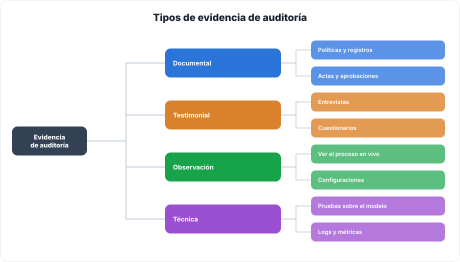
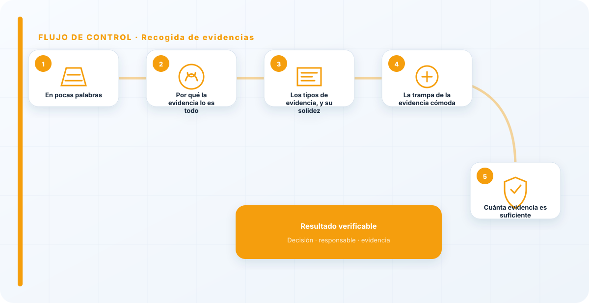
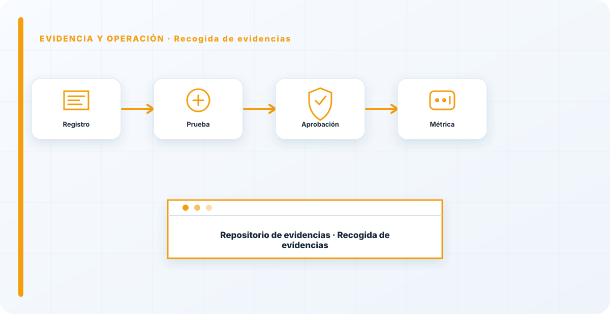

En pocas palabras
Una auditoría vale exactamente lo que valen sus evidencias. Un hallazgo sin prueba es una opinión, y las opiniones no se sostienen ni ante la organización que las recibe ni ante un tercero que las cuestione. Recoger evidencia es conseguir, para cada afirmación que hago, algo verificable: con fecha, con origen, y que otra persona podría comprobar por su cuenta y llegar a la misma conclusión. Sin esa disciplina, una auditoría no es más que un conjunto de impresiones bien redactadas, y una impresión, por acertada que sea, no obliga a nadie a mover un dedo.
Por qué la evidencia lo es todo
El valor de una auditoría no está en las conclusiones, está en que las conclusiones se puedan defender. Cuando le digo a una dirección que un control no funciona, esa afirmación tiene consecuencias —presupuesto, decisiones, a veces responsabilidades— y lo primero que va a pasar es que alguien la cuestione. Si detrás tengo una evidencia sólida, la conclusión se sostiene sola; si solo tengo mi criterio, se convierte en mi palabra contra la suya, y ahí la auditoría pierde toda su fuerza.
Por eso trato la evidencia no como un anexo del informe, sino como su cimiento. Cada frase relevante del informe debe poder señalar hacia atrás, a algo concreto que la respalda. Un informe lleno de afirmaciones sin respaldo es un castillo de naipes: impresiona hasta que alguien sopla.
Los tipos de evidencia, y su solidez
No toda evidencia es igual de fuerte, y las combino según lo que quiera demostrar y cuánto me juegue en ello:

La documental —políticas, registros, actas— es la más cómoda de pedir y, a la vez, la más fácil de maquillar: un documento demuestra que el documento existe, no que lo que dice se cumpla. La testimonial —entrevistas— aporta contexto y matices muy valiosos, pero hay que contrastarla, porque la gente cuenta lo que cree, lo que recuerda o lo que le conviene, no siempre lo que pasa. La observación directa —ver el proceso funcionando en vivo— vale mucho más, porque es difícil de fingir sobre la marcha. Y la técnica —pruebas sobre el modelo, logs, métricas— es la más sólida en IA, porque los números no tienen intenciones ni memoria selectiva.
La regla que sigo es sencilla: cuanto más importante y más incómodo es el hallazgo, más y mejor evidencia exijo, y de más de un tipo. Una observación menor puede sostenerse con una evidencia clara; una no conformidad grave, con consecuencias legales o de seguridad, la quiero apoyada en varias evidencias que se refuercen entre sí.

La trampa de la evidencia cómoda
Merece la pena detenerse en el mayor peligro de la recogida de evidencias: la tentación de quedarse en lo documental porque es lo más fácil. Pides la política, te la dan firmada, la archivas, y tienes la sensación de haber comprobado algo. Pero no has comprobado que se cumpla; has comprobado que existe. Y el hueco entre "existe la política" y "se cumple la política" es exactamente donde viven los riesgos que la auditoría debería encontrar.
Por eso, para todo lo que importa de verdad, no me conformo con el documento: quiero ver el proceso funcionando, o el log que prueba que el control se ejecutó, o la métrica que demuestra el resultado. La evidencia cómoda es, casi siempre, la más débil; la evidencia que cuesta conseguir —la que exige ver el sistema en marcha— es la que de verdad prueba algo.
Cuánta evidencia es suficiente
Una pregunta que me hacen mucho: ¿cuánta evidencia hace falta? La respuesta es proporcional al riesgo y a la gravedad de lo que estoy afirmando. Para una observación menor, una evidencia clara y bien documentada basta. Para una no conformidad crítica, quiero varias evidencias de distinto tipo que apunten en la misma dirección, porque una afirmación grave sostenida por una sola prueba es frágil: si esa prueba se discute, cae el hallazgo entero.
El equilibrio también importa en el otro sentido. Pedir montañas de evidencia para todo paraliza la auditoría y agota a la organización, que empieza a verla como un obstáculo en lugar de una ayuda. Conformarse con poco para lo grave la deja indefendible. El criterio del auditor es, precisamente, saber calibrar cuánta prueba pide cada afirmación: ni tan poca que no se sostenga, ni tanta que ahogue el proceso.
Conservar evidencia que es sensible
Hay un detalle que se olvida y que a mí me importa mucho: la evidencia de auditoría suele contener información sensible —configuraciones de seguridad, datos, hallazgos sobre vulnerabilidades—. Es, en sí misma, un activo que hay que proteger. Una auditoría que recoge evidencia delicada y luego la deja en un correo reenviado a medio mundo o en una carpeta compartida sin control predica con muy mal ejemplo.
Por eso conservo la evidencia con acceso restringido, almacenamiento controlado y trazabilidad de su procedencia: de dónde salió, cuándo, y cómo verificarla. Esa procedencia es lo que la hace defendible dentro de seis meses, si alguien cuestiona un hallazgo y tengo que reconstruir de dónde vino y por qué concluí lo que concluí. Una evidencia sin procedencia es casi tan débil como no tenerla.

Lo específico de la evidencia en IA
La evidencia en sistemas de IA tiene particularidades que conviene conocer, porque no se comporta como la evidencia de un sistema clásico. La primera es que muchas evidencias clave son volátiles: los logs de prompts y respuestas se sobrescriben o se borran según la política de retención, las métricas cambian, y un modelo se reentrena. Una evidencia que hoy existe puede no existir dentro de un mes, así que hay que capturarla en el momento, no confiar en poder recuperarla después.
La segunda es que la evidencia técnica en IA hay que anclarla a una versión. "El modelo respondía esto" no significa nada si no dices qué versión del modelo, con qué configuración y con qué datos, porque la versión siguiente puede comportarse distinto. Por eso, cuando recojo evidencia de una prueba técnica, registro exactamente sobre qué versión se hizo; si no, el hallazgo es irreproducible y, por tanto, indefendible en cuanto el modelo cambie.
Y la tercera es que la reproducibilidad, que en otros ámbitos se da por hecha, aquí exige cuidado extra: algunos modelos no son deterministas, así que la misma entrada puede dar salidas distintas. Eso no invalida la evidencia, pero obliga a recogerla con criterio estadístico —varias ejecuciones, no una— y a documentar esa variabilidad como parte del hallazgo. Ignorar esto lleva a conclusiones frágiles del tipo "lo probé una vez y salió bien", que no prueban gran cosa.
Todo esto hace que la recogida de evidencia en IA sea más exigente que en un sistema tradicional, y que haya que planificarla antes de empezar la auditoría: saber qué voy a necesitar capturar, y capturarlo mientras existe. La evidencia que no recojo a tiempo, en IA, muchas veces desaparece para siempre.
Automatizar y custodiar la captura
Como buena parte de la evidencia en IA es volátil y hay que capturarla mientras existe, tiene todo el sentido automatizar su recogida en lugar de fiarlo a que alguien se acuerde de guardar un log a tiempo. Que el propio sistema conserve, de forma controlada y con su marca de tiempo, los registros que harán falta para auditar —qué versión del modelo respondió qué, con qué datos, cuándo— convierte la evidencia de algo que hay que ir a rescatar en algo que ya está esperando ordenado el día de la auditoría.
Y a esa captura le aplico una cadena de custodia sencilla pero real: quién accede a la evidencia, cómo se almacena, cómo se verifica que no se ha alterado. En una auditoría con posibles consecuencias legales, una evidencia cuya integridad no puedo demostrar vale poco, porque siempre cabe la duda de si se manipuló. Cuidar la custodia desde el momento de la captura es lo que hace que la evidencia siga siendo defendible cuando más falta hace, que suele ser justo cuando alguien la discute.
La tentación en toda auditoría es quedarse en la evidencia documental porque es la más fácil de pedir y de dar. Pero es también la más fácil de fabricar. Una política firmada demuestra que existe una política, no que se cumpla. Por eso, para lo que importa de verdad, no me conformo con el documento: quiero ver el proceso funcionando o los logs que lo prueban. La evidencia cómoda es, casi siempre, la más débil, y la que de verdad protege es la que cuesta conseguir.
Los errores que veo una y otra vez
- Hallazgos sin evidencia, que en realidad son opiniones.
- Quedarse solo en lo documental, lo más fácil de maquillar.
- No contrastar las entrevistas con otra evidencia.
- Evidencia sin procedencia, imposible de verificar después.
- Conservar evidencia sensible sin control de acceso.
- No graduar la cantidad de evidencia según la gravedad del hallazgo.
Referencias y marcos relacionados
Contenido educativo y técnico. No sustituye asesoramiento jurídico ni una auditoría formal.